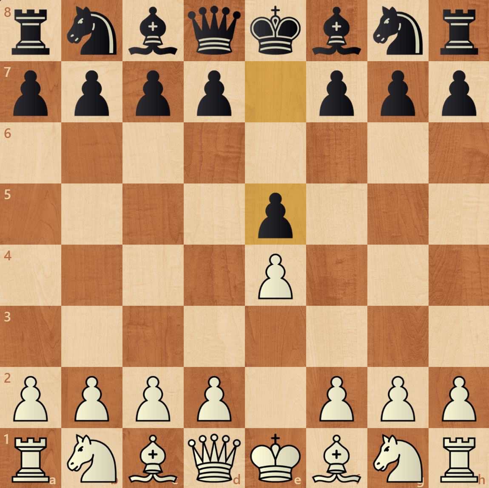
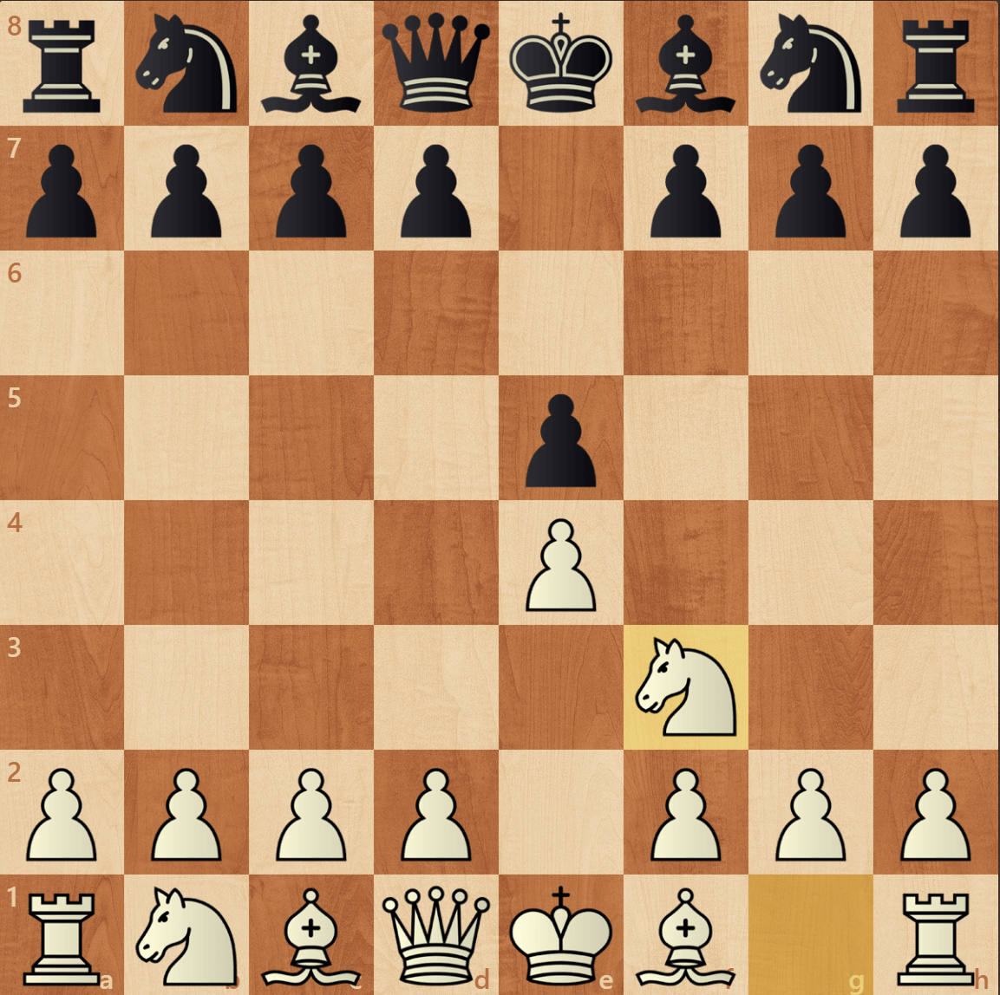
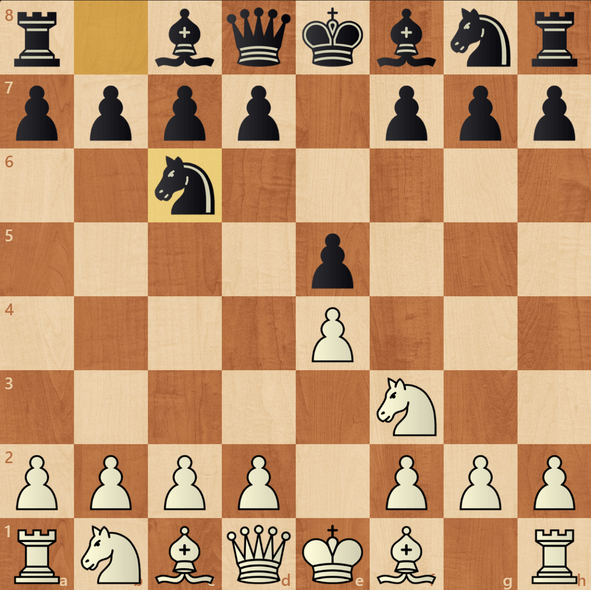

La Ponziani
E4 - E5 - C F3 - C C6 - C3



Avec les Noirs, il sera nécessaire d'être beaucoup plus prudent et de connaître plusieurs lignes différentes en fonction du jeu de l'adversaire.
Les 2 coups à étudier : E4 et D4
Avec les Blancs, il sera nécessaire de connaître pour l'instant une seule ligne mais de la connaître parfaitement sur tous les points . Nous étiudierons donc l'ouverture Ponziani.
E4 - E5 - C F3 - C C6 - C3